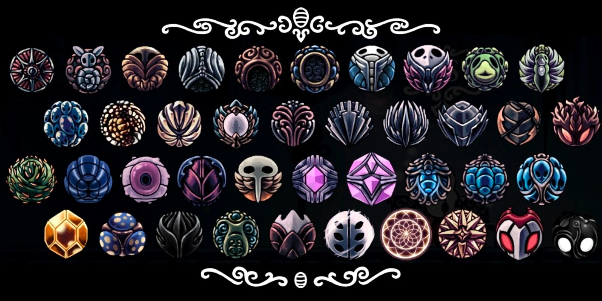
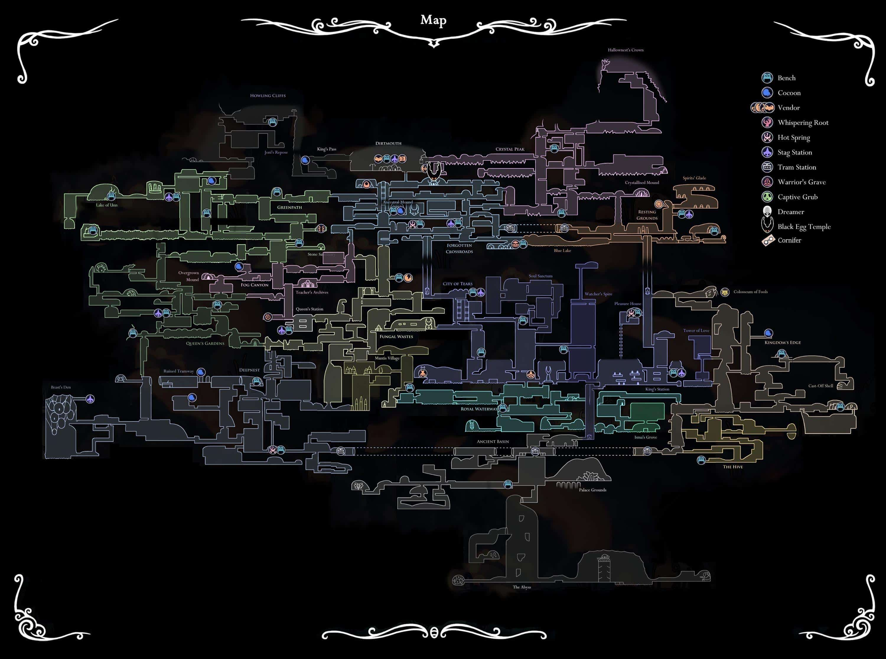
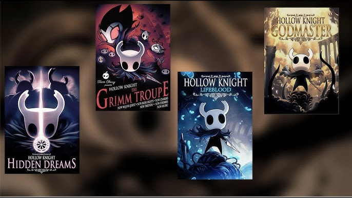

Trailer de Hollow Knight
Historia Hollow Knight
A história de Hollow Knight se passa no reino subterrâneo de Hallownest, um lugar que já foi grandioso, mas agora está em ruínas devido a uma misteriosa infecção. O jogador assume o papel de um pequeno cavaleiro sem nome, que explora esse mundo sombrio e enfrenta criaturas corrompidas enquanto desvenda os segredos do reino. O enredo gira em torno do Rei Pálido, um governante que tentou conter uma entidade chamada Vazio, criando receptáculos para impedir sua propagação. No entanto, um desses receptáculos falhou, permitindo que a infecção se espalhasse por Hallownest. O cavaleiro deve enfrentar poderosos inimigos, incluindo os Sonhadores, que protegem o selo que mantém a entidade aprisionada. O jogo é conhecido por sua narrativa não linear, onde os jogadores descobrem fragmentos da história por meio de diálogos, inscrições e eventos ocultos. Isso cria um mistério envolvente, incentivando a exploração e interpretação dos acontecimentos.
Hollow Knight

personagem principal de Hollow Knight é conhecido simplesmente como o Cavaleiro — uma figura misteriosa e silenciosa que explora o reino subterrâneo de Hallownest. Ele é um Receptáculo, criado pelo Rei Pálido e pela Dama Branca, nascido no Abismo e preenchido com o Vazio. A missão do Cavaleiro gira em torno de conter uma infecção que corrompe os habitantes de Hallownest. Essa infecção está ligada a uma entidade chamada Radiância, e o Cavaleiro precisa enfrentar desafios, adquirir habilidades e confrontar figuras-chave como os Sonhadores e o Cavaleiro Vazio — seu “irmão” — para selar ou destruir essa ameaça. O jogo oferece múltiplos finais, dependendo das escolhas do jogador. Em um deles, o Cavaleiro substitui o Cavaleiro Vazio como selo da Radiância. Em outro, com o amuleto Coração Vazio, ele consegue enfrentar diretamente a Radiância e libertar Hallownest de sua influência. É uma história densa, cheia de simbolismo e melancolia — e o silêncio do Cavaleiro só torna tudo mais enigmático.
Amuletos
 > Em Hollow Knight, existem 45 amuletos que o Cavaleiro pode equipar para ganhar habilidades especiais, melhorar atributos ou alterar a jogabilidade. Eles são equipados usando encaixes, e cada amuleto consome uma quantidade específica desses espaços. Aqui vai uma amostra dos principais: - Bússola Caprichosa (Wayward Compass): mostra sua posição no mapa — essencial para se localizar. - Enxame de Coletores (Gathering Swarm): coleta automaticamente o Geo deixado por inimigos. - Carapaça Sólida (Stalwart Shell): aumenta o tempo de invulnerabilidade após levar dano. - Caçador de Almas (Soul Catcher): gera mais Alma ao atingir inimigos. - Devorador de Almas (Soul Eater): versão mais poderosa do anterior, mas ocupa mais encaixes. - Mestre do Dash (Dashmaster): permite dashes mais rápidos e em direção para baixo. - Mestre da Corrida (Sprintmaster): aumenta a velocidade de movimento. - Canção das Larvas (Grubsong): gera Alma ao sofrer dano. - Elegia da Larvamosca (Grubberfly’s Elegy): dispara projéteis ao atacar com vida cheia. - Pedra do Xamã (Shaman Stone): aumenta o dano de feitiços. - Ferrão Estendido (Longnail) e Marca do Orgulho (Mark of Pride): aumentam o alcance do prego. - Coração Frágil / Ganância Frágil / Força Frágil: aumentam vida, Geo obtido e dano, mas quebram ao morrer — podem ser transformados em versões inquebráveis. Alguns amuletos são obtidos em lojas, outros como recompensas por salvar larvas, vencer chefes ou explorar áreas secretas. Há também sinergias entre eles, permitindo combinações poderosas.Mapa
 O mapa de Hollow Knight é mais do que uma simples ferramenta de navegação — ele é parte essencial da narrativa e da atmosfera do jogo. No início, o Cavaleiro entra em Hallownest sem qualquer mapa, e precisa encontrar Cornifer, o cartógrafo, em cada região para comprar versões parciais. Isso reforça o sentimento de descoberta e solidão. 🏔️ Penhascos Uivantes A borda esquecida do mundo. Ventos fortes e solidão marcam esse lugar, onde o Cavaleiro inicia sua jornada. É como se o próprio mundo estivesse tentando impedir sua entrada. 🏚️ Dirtmouth Uma vila fantasma acima das ruínas. Antigamente um ponto de entrada para Hallownest, agora é lar de poucos sobreviventes e viajantes curiosos. 🕳️ Encruzilhada Esquecida O coração decadente do reino. Era uma área movimentada, mas hoje está tomada por criaturas corrompidas e ecos do passado. 🌿 Caminho Verde Uma floresta viva, tomada por vegetação e guardiões naturais. Representa a resistência da natureza à decadência do reino. 🍄 Ermos Fúngicos Uma sociedade de cogumelos sencientes. Apesar do tom cômico, há sinais de conflito e isolamento cultural. 🌫️ Cânion da Névoa Um vale místico, lar dos Xamãs Caracóis. A névoa esconde perigos e segredos ligados à manipulação da Alma. 🏙️ Cidade das Lágrimas O centro político de Hallownest, eternamente chovendo. Aqui vivia o Rei Pálido. A cidade é símbolo da glória e da queda do reino. 🧪 Hidrovia Real Os esgotos do reino, onde experimentos e rejeitos se acumulam. Criaturas deformadas e perigosas habitam esse labirinto. 🕷️ Ninho Profundo Uma região escura e labiríntica, lar da Tribo das Aranhas. É um lugar de isolamento e sacrifício, onde o Vazio se manifesta com força. 💧 Bacia Antiga O berço dos Receptáculos. Um lugar silencioso e melancólico, onde o Cavaleiro confronta suas origens. Abaixo dela está o Abismo, onde o Vazio pulsa. 🐝 A Colmeia Uma sociedade de abelhas que sobreviveu à infecção por conta de seu isolamento. Um raro exemplo de resistência. 🌸 Jardins da Rainha Um santuário natural dedicado à Dama Branca. Beleza e melancolia se misturam nesse lugar de reverência e abandono. 💤 Terra do Descanso Um cemitério sagrado onde repousam os Sonhadores. É um lugar de memória, onde o tempo parece suspenso.Jogo extra
Hollow Knight recebeu quatro DLCs gratuitas que expandem significativamente o conteúdo do jogo base. Cada uma trouxe novos desafios, personagens e histórias que aprofundam o universo de Hallownest. Aqui vai um resumo de cada uma: 🌙 Hidden Dreams (2017) A primeira expansão adicionou: - Chefes secretos: como o White Defender e o Grey Prince Zote. - A habilidade Dreamgate, que permite teletransporte rápido. - Novas áreas e melhorias de qualidade de vida. 🎪 The Grimm Troupe (2017) Uma das mais queridas, com temática circense e sombria: - Introduz a Trupe Grimm, liderada pelo enigmático Troupe Master Grimm. - Novo amuleto: Grimmchild, que evolui conforme você coleta chamas. - Possibilidade de seguir dois caminhos: acolher ou banir a trupe. 💙 Lifeblood (2018) Menor em conteúdo narrativo, mas importante: - Melhorias gráficas e de desempenho. - Novo chefe: Hive Knight. - Ajustes em feitiços e HUD. ⚔️ Godmaster (2018) A mais desafiadora: - Introduz os Panteões, arenas com chefes em sequência. - Enfrente versões mais difíceis de chefes, incluindo o lendário Absolute Radiance. - Aprofunda o lore com a mitologia dos deuses de Hallownest.
Personagens de Hollow Knight
| Personagem | Tipo | Localização |
|---|---|---|
| Cavaleiro | Jogador | Hallownest |
| Hornet | Aliada/Oponente | Terras Entrelaçadas, Ninho Profundo |
| Zote, o Poderoso | NPC cômico | Cidade das Lágrimas, Colosseu |
| Quirrel | Explorador | Greenpath, Cidade das Lágrimas |
| Cornifer | Cartógrafo | Várias áreas de Hallownest |
| Sly | Comerciante | Dirtmouth |
| Salubra | Vendedora de Amuletos | Ermos Fúngicos |
| Lurien | Sonhador | Cidade das Lágrimas |
| Herrah | Sonhadora | Ninho Profundo |
| Monomon | Sonhadora | Arquivos da Névoa |